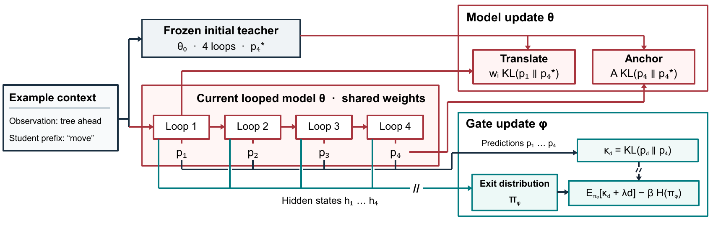

Practice Makes Fluent
Learning to Use Earlier Predictions in Looped Models
School of Electrical Engineering, KAIST
† Equal contribution
Same task, two days.
Move both green blocks from the left tray to the right. Watch what changes after practice.
Two individual runs, played at their recorded speed. The shorter clip holds on its final frame while the first-day run continues.
How practice changes the loop
A looped model can revise its prediction several times before it acts. FLUENT uses the model’s own final prediction to teach earlier loops, then learns when those early predictions are ready to use.

Translate
Early loops learn to match the final prediction of the frozen initial model.
Anchor
The current final loop stays close to that teacher as the shared weights change.
Gate
The exit policy weighs disagreement with the current final loop against the cost of another iteration.
What changed on the robot?
Across 100 held-out scenarios, each repeated seven times, FLUENT finished successful episodes in 31 seconds on average. The initial policy took 69 seconds.
| Real-robot measure | Initial policy | FLUENT |
|---|---|---|
| Task success | 62.29% | 74.57% |
| Time per successful episode | 69 s | 31 s |
| Action chunks per successful episode | 86 | 52 |
| Executed iterations per chunk | 8.25 | 3.46 |
Results on LIBERO, Crafter, and language tasks
- LIBERO. Mean task success rose from 91.9% to 93.5% as executed action-head iterations fell from 6.27 to 3.97.
- Crafter. On Ouro-1.4B, mean achievements in new worlds rose from 7.19 to 8.40. Mean selected depth across seen and unseen games fell from 3.63 to 2.66.
- Language tasks. Ouro-1.4B mean accuracy was 65.3% before practice and 65.4% after. Mean selected depth fell from 3.05 to 2.48 under dense readout.